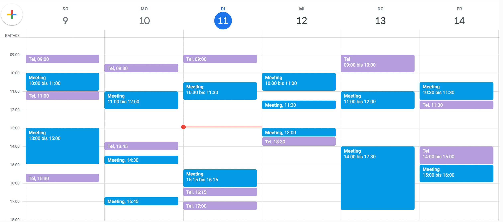
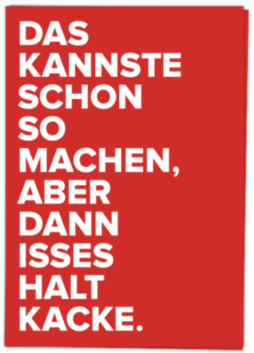
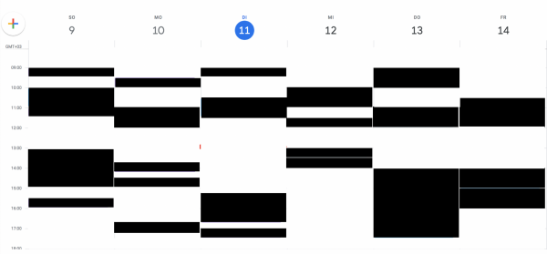
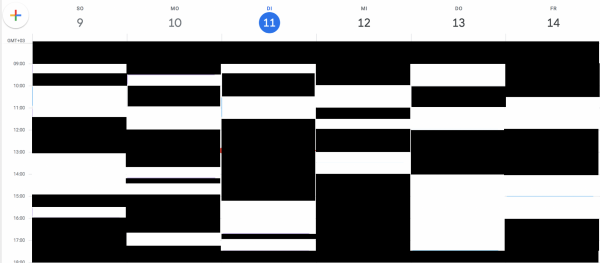
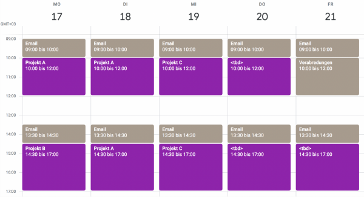
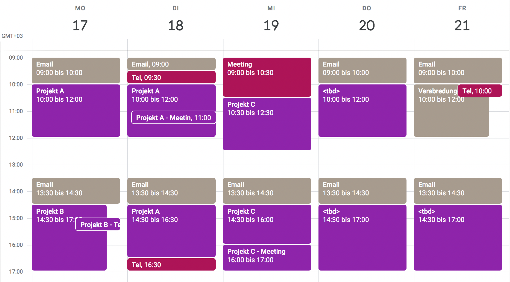

Mit Time-Blocking gegen die Kalender-Täuschung
Was die folgende optische Täuschung, die Sie sicherlich kennen, mit Time-Blocking zu tun hat, erfahren Sie später:
Was auch immer Sie beim ersten Blick darin sehen – eine Vase oder zwei Gesichter –, es ist eben nur eine mögliche Sichtweise von zweien. Wenn Sie dann länger hinschauen (oder einen Hinweis bekommen), können Sie auch die alternative Sichtweise einnehmen. Das Bild „klappt um“: Sie sehen zuerst eine Vase vor weißem Hintergrund, nun sehen Sie zwei Gesichtsprofile vor schwarzem Hintergrund. Oder umgekehrt.
Das ist als optische Täuschung amüsant. Ernst ist es hingegen, wenn Sie dieser Täuschung beim Umgang mit Ihrem Kalender erliegen.
Die Frage bei der Pflege Ihres Kalenders ist nämlich auch: Was ist der Vordergrund, was ist der Hintergrund? Diese Frage stellt sich auch oder gerade, wenn Sie schon virtuos mit Ihrem Kalender umgehen.
Bei einem leeren Kalender „für die Arbeit“ bin ich sehr skeptisch, ob systematisch, verschwendungsarm und verlässlich gearbeitet wird. Doch auch ein voller Kalender ist leider kein Garant dafür.
Hier ein vereinfachtes Beispiel:

Dieser Kalender scheint „gut geführt“. Meetings und Telefonate sind fein säuberlich eingetragen. Da kann nichts durch die Lappen gehen. Da hat jemand seine Zeit im Griff. Systematisch wird der Kalender genutzt. Verlässlichkeit vorprogrammiert. Oder?
In Bezug auf das, was eingetragen ist, bezweifle ich die Systematik nicht. Da wird sicher jeder Termin verlässlich eingehalten. Aber wird deshalb flüssig und verschwendungsarm gearbeitet? Werden deshalb Aufgaben zügig erledigt? Ich behaupte, nein.
Diese Meinung erlaube ich mir zu haben, weil ich hinterfrage, ob das, was der Vordergrund zu sein scheint, auch wirklich der Vordergrund ist bzw. sein sollte.
Im Vordergrund steht immer das, was Termine im Kalender hat. Das ist ja auch der Zweck eines Kalenders. Er soll zu Erledigendes greifbar machen, so dass es nicht „durch die Ritzen fällt“.
Den Vordergrund bilden in diesem Fall Meetings und Telefonate. Allgemeiner ausgedrückt sind es Verabredungen, d.h. Zusammenkünfte mit anderen Personen. Das Beispiel oben ist konstruiert, doch habe ich es nach meiner Erfahrung gestaltet. Die ist nämlich, dass die Masse der Eintragungen in Kalendern, die ich sehe, eben Verabredungen sind. Deshalb sind auch gemeinsame Kalender so hoch im Kurs. Deshalb war es so wichtig, dass Standards entwickelt wurden, um Einladungen in Emails verschicken zu können, die leicht in die Kalender der Empfänger übernommen werden können.
Die Kalender im Office sind im Wesentlichen Verabredungskalender. Verabredungen stehen damit im Vordergrund der Aufmerksamkeitsgestaltung.
Dazu fällt mir leider nur ein:

Sorry, weniger schonend kann ich es nicht sagen. Denn es ist ein großer, ein sehr großer Übelstand, so mit dem Kalender umzugehen. Es ist respektlos dem gegenüber, was nämlich eigentlich getan werden soll. Und da das dem Kunden eines Unternehmens dient, ist es respektlos dem Kunden gegenüber.
Sie mögen jetzt widersprechen und rufen, es sei doch aber die Aufgabe, an all diesen Verabredungen teilzunehmen. Sonst stünden die nicht im Kalender und würden erst gar nicht vereinbart.
Konzentration auf das Geldwerte
Aber ich erlaube mir zu entgegnen: Es ist eben nicht die Aufgabe der allermeisten Mitarbeiter eines Unternehmens, an Meetings teilzunehmen oder Telefonate zu führen. Es ist nicht ihre Aufgabe, weil man davon nicht mehr wünschen kann, um ein Unternehmen voran zu bringen.
Mitarbeiter werden bezahlt, um etwas zu produzieren, was dem Unternehmen mehr oder weniger unmittelbar größeren Umsatz verschafft. Sehr einfach zu verstehen ist das bei Stellen wie Verkäufer oder Mechatroniker.
Die Aufgabe des Verkäufers ist es, Aufträge „zu produzieren“. Mit der Menge und Höhe der durch ihn abgeschlossenen Aufträge ist ein Verkäufer am Ende des Monats entweder sein Gehalt wert oder nicht. Weil er direkten Kontakt zu Kunden hat, versucht man „die Produktion“ eines Verkäufers auch mit Provisionen anzukurbeln.
Die Aufgabe eines Mechatronikers z.B. bei einer Autowerkstatt ist es, im Rahmen eines Auftrags die versprochene Leistung tatsächlich zu erbringen. Er steht für die typische Produktion eines Unternehmens, sein Produkt, hier: fehlerfreie Autos. Er hat oft keinen direkten Kundenkontakt; jedenfalls keinen, der die Auftragshöhe beeinflussen könnte. Deshalb bekommt ein Mechatroniker keine Provision, sondern nur ein Gehalt.
Für Verkäufer wie Mechatroniker gilt: Sie sind ihr Gehalt umso mehr wert, je mehr sie von dem produzieren, was ihre Aufgabe ist. Beim einen sind das Aufträge, beim anderen fehlerfreie Autos. Meetings und Telefonate sind es nicht!
Und wie ist es „im Office“? Wofür werden Menschen im Büro bezahlt? Der Mechatroniker ist kein typischer Büroarbeiter und ein Verkäufer ist auch besser „draußen beim Kunden“. Was also macht einen Buchhalter, eine Assistentin, einen Programmierer, eine Abteilungsleiterin ihr Gehalt wert?
Sind die Produkte von Buchhalter, Assistentin, Programmierer, Abteilungsleiterin Meetings und Telefonate? Die Antwort kann nur ein entschiedenes „Nein!“ sein.
Aber genau das tragen all diese „Office-Worker“ in ihre Kalender ein. Verabredungen sind lediglich Mittel zur Erzielung eines Zwecks; sie sind nicht der Zweck und damit nicht die Aufgabe und also nicht „gehaltswürdig“. Verabredungen sind Verschwendung. Manchmal sind sie nicht zu vermeiden, trotzdem gehören sie der Kategorie Verschwendung an. Es ist schlicht nicht wünschenswert, davon mehr zu produzieren. (Eine Ausnahme mag dabei ein Call Center sein, dessen Mitarbeiter die Aufgabe haben, zu telefonieren.)
Büroarbeit, Knowledgework, Ihre Arbeit ist kein Kaffeekränzchen. Sie sollen sich nicht ständig verabreden und darüber Kalender führen. Etwas anderes steht bei Ihnen im Vordergrund. Meetings und Telefonate gehören in den Hintergrund.
Mit Verabredungen im Kalender ist der Bock zum Gärtner gemacht. Verschwendung wird systematisch verwaltet – und die eigentlichen Aufgaben fallen durch die Ritzen.
Ein Zitat von Eric Barker, dem Autor von Barking Up the Wrong Tree, drückt es für mich sehr treffend aus:
„Most of us use our calendars all wrong: we don’t schedule work; we schedule interruptions. Meetings get scheduled. Phone calls get scheduled. Doctor appointments get scheduled. You know what often doesn’t get scheduled? Real work. All those other things are distractions. Often, they’re other people’s work. But they get dedicated blocks of time, and your real work becomes an orphan.“
Geplant wird nicht reelle, richtige Arbeit, sondern das, was uns dabei stört: Unterbrechungen, Ablenkungen, Lästiges. Das Eigentliche, das Geldwerte wird zu einem Waisenkind.
Hier derselbe Kalender wie oben, um zu verdeutlichen, was Eric Barker und ich meinen:

Was ist Vordergrund, was ist Hintergrund? Was ist Geld wert, was ist Verschwendung? Wenn Sie am Anfang eine Vase gesehen haben, dann empfinden Sie jetzt vielleicht die eingeschwärzten Zeiträume im Vordergrund.
Versuchen Sie nun, das Bild „umklappen zu lassen“. Das ist hier allerdings nicht so einfach, weil das Gehirn keine bedeutungsvollen Formen zu fassen bekommt. Aber ich helfe Ihnen gern:

Ist das ein besseres Kalenderbild? Wenn für Sie Schwarz die Vordergrundfarbe ist, wie gefällt Ihnen diese Zeiteinteilung? Ist da dem Wesentlichen genug Raum gegeben?
Ich bezweifle es. Denn wie Sie das Bild auch klappen – Schwarz im Vordergrund oder Weiß im Vordergrund –, der Zeitstrom ist zerrissen, d.h. die Aufmerksamkeit ist fragmentiert. Multitasking regiert, denn der Wechsel zwischen Verabredung und „Stillarbeit“ ist permanent.
Das ist das Gegenteil von dem, was zügige und hochqualitative Ergebnisse begünstigt.
Und alles beginnt damit, dass die Verschwendung, das Lästige, das ansonsten Unterbrechende den Kalender beherrscht.
Um dem Geldwerten, dem Wesentlichen und damit dem Kunden den nötigen Respekt zu erweisen, muss die Kalendernutzung „umgeklappt“ werden. Sie müssen sich der Täuschung bewusst werden und den heutigen Hintergrund zum Vordergrund machen und umgekehrt.
Time-Blocking
In den Kalender gehören als erstes Verabredungen mit sich selbst. Reservieren Sie zuerst Zeiträume, in denen Sie sich auf ihre Aufgaben konzentrieren. Still und allein. Fokussiert und konzentriert. Nur so dienen Sie dem Unternehmenszweck mit höchstmöglicher Kraft. Arbeiten Sie smart, nicht hart.
Harte Arbeit ist, wenn Sie der Verschwendung als erstes dienen und dann versuchen, in der übrig gebliebenen Zeit, das Eigentliche zu schaffen. Schweißfeuchte Stirn, Erschöpfung, abendliche Leere sind vorprogrammiert. „Warum bin ich so geschafft, wenn ich doch so wenig geschafft habe?“ ist die ständig nagende Frage.
Smarte Arbeit hingegen ist, wenn Sie zuerst an sich denken, d.h. Ihre Zeit gewissenhafter Konzentration auf Ihre Aufgaben als erstes planen. Das könnte z.B. so aussehen:

Hier stehen farblich im Vordergrund die „Schaffenszeiten“ für die großen Aufgaben, z.B. Projekte. Jeden Tag sind Aufmerksamkeitsstrecken dafür reserviert. Für deren Erledigung gibt es das Gehalt. Eine weitere Feinstruktur innerhalb der Projekte ist zunächst nicht nötig.
Und da so ein Plan selten klappt, ist natürlich nicht die ganze Zeit inhaltlich definiert. Ab Donnerstag steht in den „Fokuszeiten“
Und wofür steht der Hintergrund, die frei gelassenen Zeiträume, das Weiß? Für Zeiten, in denen eben nicht erwartet wird, konzentriert arbeiten zu können. Irgendwas ist immer. Allemal muss ja „Email-Housekeeping“ betrieben werden. Bei der ganzen konzentrierten Arbeit darf man die Verbindung zur Außenwelt nicht abreißen lassen. Doch das ist sekundär. Das gehört zum Hintergrund.
Da solch Unvermeidliches allerdings so unerwartet ist wie Weihnachten, sollte es auch explizit im Kalender vermerkt werden. Das kann z.B. so aussehen:

Jetzt ist klar, dass man sich zweimal am Tag Zeit nimmt, um auf Emails zu antworten und einmal in der Woche sogar Zeit reserviert, für nicht projektbezogene Verabredungen.
Indem Email-Housekeeping und Verabredungen in dieser Weise von Ihnen proaktiv im Kalender platziert werden, definieren Sie von vornherein Grenzen dafür. Sie können nun nicht mehr aufgefressen werden von Unterbrechungen dieser Art. Sie behalten die Hoheit über Ihre Zeit. Wenn jemand fragt „Wann können wir mal reden?“, dann wissen Sie genau, wann das sein kann: Freitag in der Zeit von 10:00 bis 12:00, oder vielleicht in einem der Email-Blöcke, falls darin etwas Luft ist.
Aber dann passiert doch das Arbeitsleben. Aus Theorie wird Praxis. Selbst der schönste Fokusplan muss nun angepasst werden.

Die roten Termine sind ausdrückliche Verschwendung, weil nicht ersichtlich ist, was sie zum Fortschritt eines Projektes beitragen. Sie sind daher bewusst an den Rand der Fokuszeit gedrängt. Die Fokuszeit selbst ist heilig und sollte gerade durch solche Verschwendung nicht unterbrochen werden.
Aber es gibt auch hier und da Verabredungen, die zur Erledigung wesentlicher Aufgaben notwendig sind. Die liegen dann durchaus innerhalb der Fokuszeit. Sie gehören eben dazu, wenn Fortschritt bei Geldwertem gemacht werden soll.
Zusammenfassung
Time-Blocking nennt sich der Ansatz, den ich Ihnen hier vorgestellt habe. „Blocking“ ist allerdings nicht (nur) mit „blockieren“ zu übersetzen, sondern mit „zu Blöcken zusammenfassen“.
Statt dass Sie sich Ihre Zeit und damit Aufmerksamkeit zerreißen lassen durch störende Verabredungen, ergreifen Sie die Initiative. Agieren Sie, statt zu reagieren. Setzen Sie in Ihrem Kalender in den Vordergrund, was Wesentlich ist; Zeit dafür ist zusammenhängend zu platzieren, en bloc. Was ist Ihre Aufgabe, wofür werden Sie bezahlt, welche Resultate sollen Sie liefern? Stellen Sie das in den Mittelpunkt. Finden Sie dafür zuerst ausgedehnte Zeitblöcke. Konkret empfehle ich sogar, Fokuszeitblöcke nicht kürzer als 2 Stunden machen. Für bedeutungsvolle, konzentrierte Arbeit brauchen Sie Ruhe.
Mit Time-Blocking verweisen Sie Verschwendung und Störungen in den Hintergrund. Sie müssen sehen, wo sie in den Ritzen zwischen dem Wesentlichen im Vordergrund noch Platz finden.
Erkennen Sie die Kalender-Täuschung. Klappen Sie das Kalender-Bild um. Nur Mut!
Weitere Artikel

Puffer sichern Flow
Es wird allerhöchste Zeit, sich von der Idee, dass nur wer am Limit arbeitet, effizient sei, zu verabschieden. Unter Volllast, ganz ohne Puffer zu arbeiten ist eine „gute“ Voraussetzung für Unzuverlässigkeit, Fehler …

Kollaboration im Office mit Kanbanize
Ein Tool, was mich für die digitale Kollaboration im Office begeistert ist Kanbanize. Dort kann man wirklich sehr fortgeschritten und smart zusammenarbeiten. Mit seinen verschiedenen Perspektiven auf den Flow im Office, der …